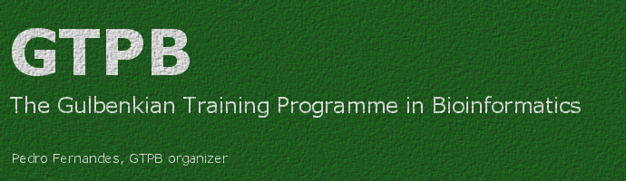

|
 |
|
PW12 Automated and reproducible analysis of NGS data |
|
IMPORTANT DATES for PW12
|
Instructors: |
|
Rutger Vos studied biology at the University of Amsterdam, where he graduated in
2000. He then embarked on his PhD research under professor Arne Mooers at Simon
Fraser University in Vancouver, Canada, where he defended his thesis on
phyloinformatic problems in 2006. As a self-taught programmer he then became
involved in several open-source scientific software development projects while
continuing his research career through a postdoctoral fellowship at the
University of British Columbia (Vancouver, Canada) and a Marie Curie research
fellowship at the University of Reading (Reading, UK). In Spring of 2012 he
commenced his employment as the bioinformaticist of the Naturalis Biodiversity
Center in a role where he combines novel research with
bioinformatics contributions to various research programmes within the
organization. In his spare time he also contributes to various open source
software projects (TreeBASE, Bio::Phylo, NeXML) and is co-PI of the
PhyloTastic project. In addition Rutger has taught bioinformatics workshops in
the US, Japan, China, Kenya and once before at GTPB
(PHYLOINF09).
|
|
Darin London studied biology at Texas Tech University in the
United States, graduating with a Masters of Science in 1999. He has been
supporting biological research with computational support for 12 years, starting
at GlaxoSmithKline in 2000, then moving to the European Bioinformatics Institute
to work on the Biomart system, and finally coming to the Institute for Genome
Sciences and Policy at Duke University, Durham, USA in 2005. He has developed
automated analysis pipelines to help researchers analyze over 25Tb of Vertebrate
NGS data (GAII and HiSeq), mostly involving research work on the Encyclopedia of
DNA Elements (ENCode). Darin has taught numerous workshops on programming and
automation with the Perl programming language, including the phyloinformatics
workshops at the NESCent, Durham, USA, and the GTPB
(PHYLOINF09). |
Course DescriptionIntroductionNext generation sequencing (NGS) technologies for DNA have resulted in a yet a bigger deluge of data. Researchers are learning that analysing such data sets is becoming the bottleneck in their work. In many cases, several steps in these analyses are fairly generic (e.g. quality control filtering, alignment to reference sequences, typing) so that off-the-shelf pipelines can be applied. In other cases, novel research approaches require development of new analysis pipelines. Either way, all analysis steps should be repeatable and any changes made to the data (e.g. renaming, annotation, alignment) should be recorded so that the provenance of the results is clear and inferences are reproducible. In this brief workshop we will establish several best practices of reproducibility and provenance recording in the (comparative) analysis of data obtained by NGS. In doing so we will encounter the commonly used technologies that enable these best practices by working through use cases that illustrate the underlying principles.Best practices
Technologies
Use cases
Target audienceThis course is aimed at researchers who've recently embarked on NGS projects and now, faced with large amounts of data, would like to learn how to automate generic analysis steps and develop new ones in a reproducible (and shareable) way. The course will be illustrated with examples from specific single-celled and multicellular taxa but the concepts are applicable to any species not explicitly referred to in the course. The ideal attendee is a scientist who is not afraid to get his/her hands dirty to acquire the computer-literacy skills for dealing with the informatics side of data analysis.Pre-requisitesThis course assumes that attendees understand the science behind DNA sequencing and sequence analysis, and will not go deeply into underlying theory (or the mechanics of given algorithms, for example) as such. What will be taught are technical solutions for automating and scaling up such analyses, which will include beginner-level programming. Some previous experience with running scripts in any programming language (e.g. R, Perl, Python, batch scripts) will be helpful, as will general computer literacy (e.g. editing plain text data files, navigating the command line). |
|
Application |
|
Detailed Program |
|
|
|
Instituto Gulbenkian de Ciência, Apartado 14, 2781-901 Oeiras, Portugal Last updated: July 30th 2012 |